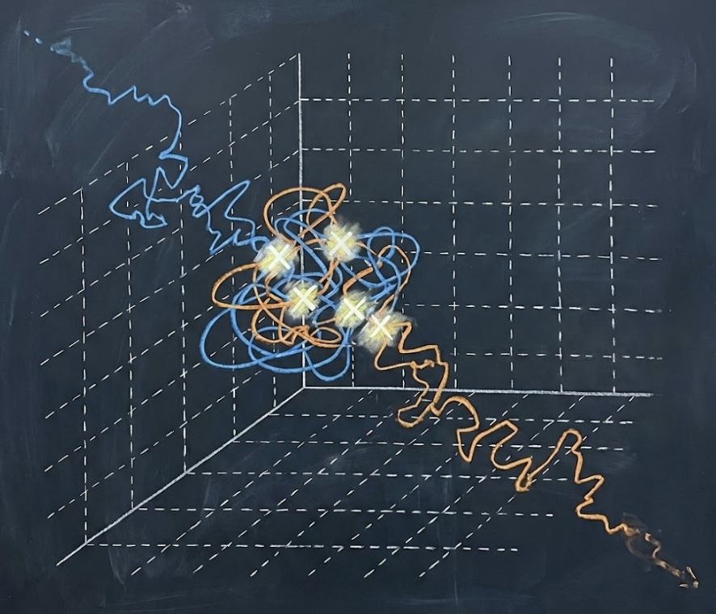

|
Zachary Burton |

|
I am a machine learning engineer at Meta working on Facebook Reels.
I graduated from MIT with an SB in Mathematics. I am interested in AI for mathematics.
I was born in NYC and raised in the UK. Outside of research, I've ran track for 10 years! (10.63s 100m). Feel free to reach out if you want to chat!
|
Structured Hints for Sample-Efficient Lean Theorem Proving
Preprint, 2026 arXiv Testing whether neural theorem provers benefit from lightweight structural guidance. Achieves 43% relative improvement on miniF2F with a simple prompt schedule. |
|

|
When Does Tabular RL Actually Break?
Blog Post, 2025 post A systematic study of representation bottlenecks in symbolic algebra, testing where RL breaks on high school math. |
|  |
Collision Thresholds on Lattices
Preprint arXiv An expository derivation using Poissonization and Laplace asymptotics to analyze random walks on lattices. |

|
zOS
github Local LLM self-training loop with step-by-step feedback, written with Rust & Tauri. |
|
Neurosymbolic Synthesis Engine
A C++ synthesizer featuring a custom AST, evaluator, and stochastic/beam search backends. |
|

|
PIEFACE: Online RLHF Sandbox
website An online sandbox for RLHF research. Built with a Flask backend and distributed PPO training loop. |

|
Scribe AI
devpost Autocomplete for math handwriting. |